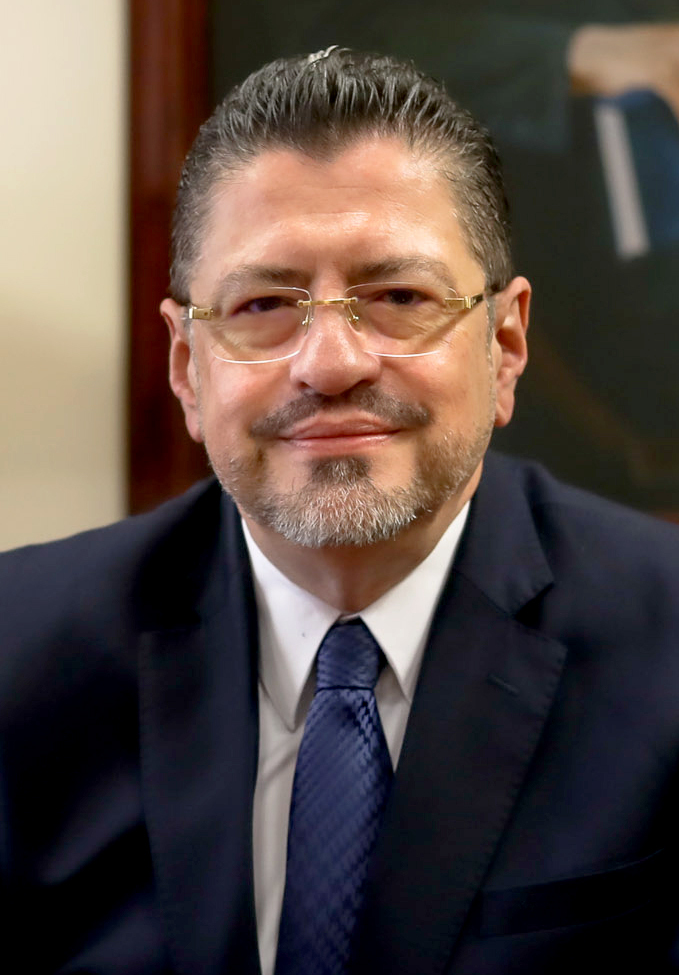

Progreso Social Democrático
Rodrigo Chaves Robles

Información del candidato
Rodrigo Alberto de Jesús Chaves Robles (San José, 10 de junio de 1961) es un economista costarricense y exfuncionario de carrera del Banco Mundial. Es el 49° presidente de la República de Costa Rica desde el 8 de mayo de 2022 por el Partido Progreso Social Democrático. Fue ministro de Hacienda, durante el gobierno de Carlos Alvarado Quesada, entre 2019 y 2020. Fue candidato a la Presidencia de Costa Rica, por el Partido Progreso Social Democrático.